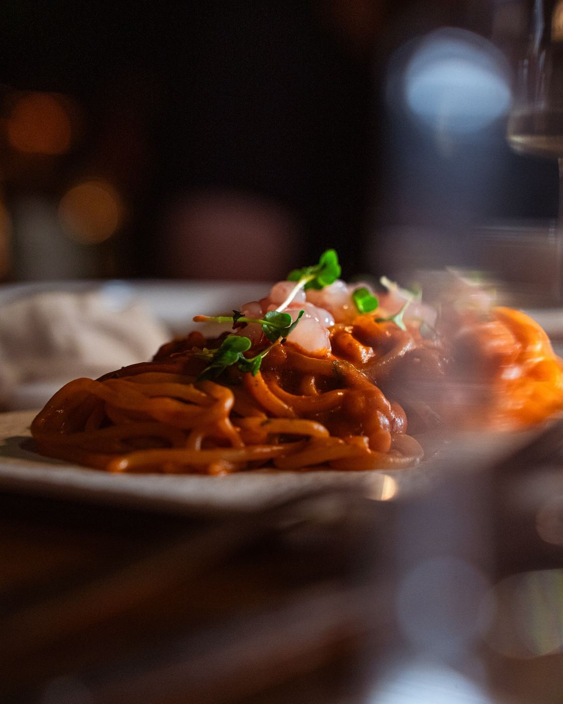

Pescato del giorno, pesto al mortaio e cucina ligure. La carta cambia con le stagioni e con quello che arriva dalla barca.
Allergeni e intolleranze: comunicalo al personale in fase di ordinazione o indicalo nella prenotazione: adattiamo quasi tutti i piatti.
Alcuni prodotti ittici destinati al consumo crudo sono sottoposti ad abbattimento rapido di temperatura come da Reg. CE 853/2004. In mancanza di prodotto fresco può essere utilizzato prodotto congelato o surgelato all'origine.
Coperto € 3 a persona. I prezzi sono indicativi e possono variare con la stagionalità del pescato.
Non c'è un fornitore che scarica il pesto in cucina. C'è una cassetta di basilico che qualcuno porta giù a mano lungo la passeggiata, e un mortaio di marmo che gira finché non è pronto.
Pinoli, aglio, pecorino, un olio che sa di taggiasca. Il pesto si fa al momento, in quantità piccole, perché dopo mezz'ora non è più la stessa cosa. È il motivo per cui certe sere finisce — e preferiamo dirlo piuttosto che servirne uno qualsiasi.
Trofie, trenette o pansoti: scegli tu →Una carta corta e ragionata: Vermentino dei Colli di Luni, Sciacchetrà delle Cinque Terre, Pigato del ponente ligure. Accanto, bollicine italiane e francesi e qualche rosso leggero, perché anche il pesce a volte lo chiede.